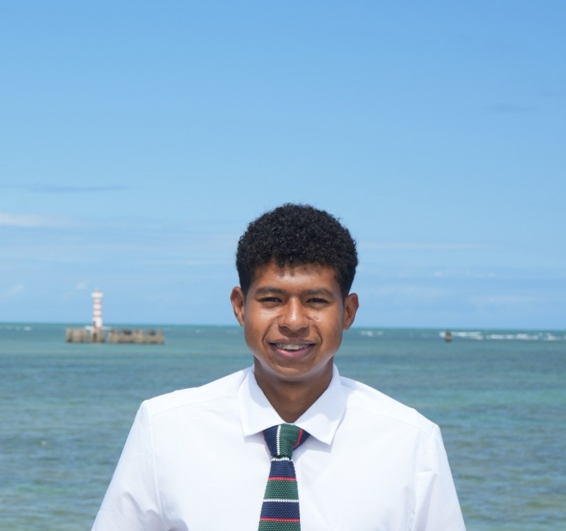

WDD 130 | Adilson Barbosa

Hello! My name is Adilson Barbosa. I am from Rio Grande do Sul, Brazil. I enjoy learning programming and web development.

Hello! My name is Adilson Barbosa. I am from Rio Grande do Sul, Brazil. I enjoy learning programming and web development.